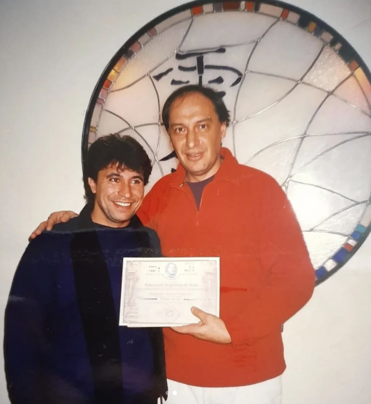
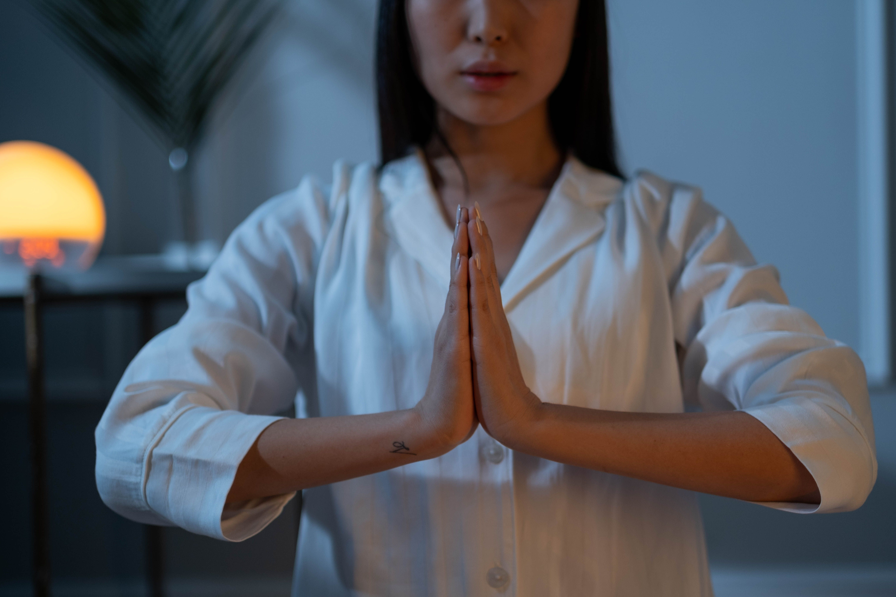

Hola!, soy Alejandro Camacho
Hola! Mi nombre es Alejandro, fui alumno directo de Claudio Márquez @armonizate, fundador de la Asociación Argentina de Reiki y persona que me acompaña en la foto (tomada en el 2001 en donde estaba en mis inicios y recibía mi diploma de Primer Nivel).

¿Que es?
El reiki es una terapia alternativa que utiliza las manos para trasmitir energía curativa, aliviar dolores crónicos y promover la relajacion.
La función y el objetivo del reikista es trasmitir y proporcionar ésta energia colocando las manos sobre o cerca del cuerpo del paciente, generando tambien una sensación de profunda tranquilidad y paz. Ésta Practica puede hacerse hasta con 15 posiciones de manos distintas y de tres a cinco minutos cada una.
Beneficios

Equilibrio de chakras

Alivio de dolores fisicos y emocionales

Reduccion de estrés y ansiedad

Mayor claridad mental
Modalidad
Presencial
Viví una experiencia de relajación profunda en un ambiente tranquilo y preparado para tu bienestar. Durante la sesión se busca armonizar la energía del cuerpo, ayudando a disminuir el estrés, aliviar tensiones y favorecer el equilibrio físico, mental y emocional.Cada encuentro es personalizado, respetando tus necesidades y brindándote un espacio para reconectar con vos mismo.

A distancia
Recibí una sesión de Reiki desde la comodidad de tu hogar, sin importar dónde te encuentres. Esta modalidad permite acceder a un momento de calma y bienestar sin necesidad de trasladarte, manteniendo el mismo compromiso y dedicación durante toda la sesión. Es una alternativa práctica para quienes buscan relajarse, reducir el estrés y dedicar un tiempo al cuidado personal desde cualquier lugar.